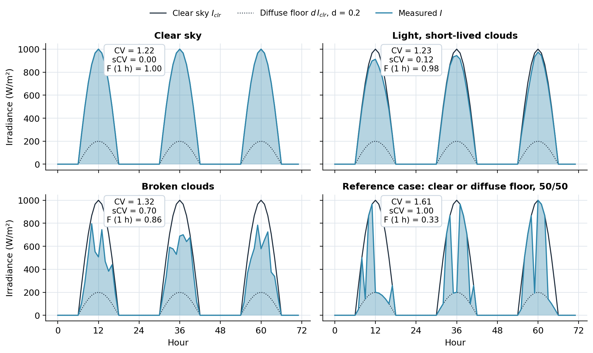
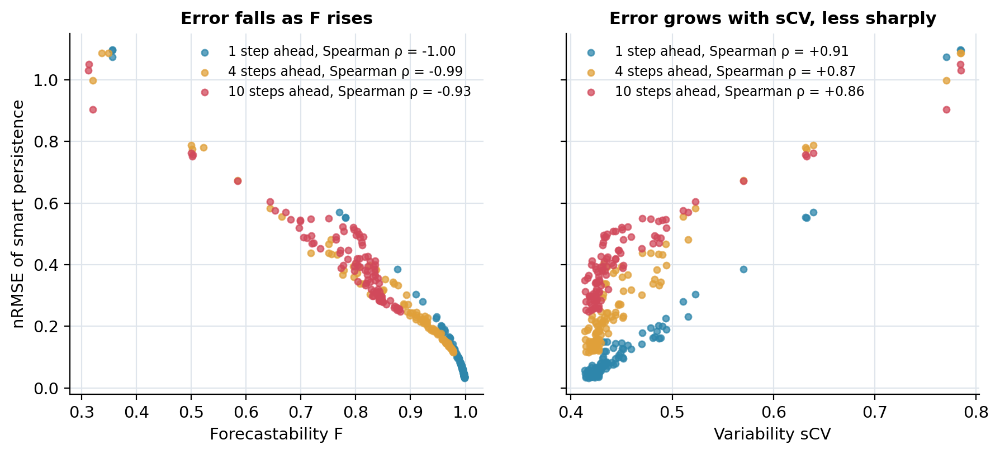

Solar forecasting explained · 22 October 2026 · Published article, open code
sCV and F: variability and forecastability of solar irradiance
In brief
- sCV measures how much clouds make irradiance deviate from clear sky, scaled so that 0 is a clear sky and 1 a sky switching at random between clear sky and overcast.
- F = 1 + sCV(ρmax − 1) adds the memory of the clouds at the forecast horizon, and predicts forecast difficulty better than sCV alone, on synthetic series and 68 stations of the Spanish SIAR network.
- Published in Renewable Energy 256, 123913 (2026) by C. Voyant, A. Julien, M. Despotovic, G. Notton, L. A. Garcia-Gutierrez, C. F. Nicolosi, P. Blanc and J. Bright; MATLAB code, doi:10.5281/zenodo.23562553.
How variable is the sun, and how forecastable? sCV and F explained
Before choosing a forecasting model, it helps to know how difficult the site is. Two numbers answer that: sCV, the variability that clouds add to the course of the sun, and F, how much of that variability can be anticipated at a given horizon.
The theory
Why, in the words of the article: traditional metrics such as the standard deviation or the coefficient of variation fail to separate stochastic fluctuations from the deterministic trend of solar irradiance. Taking clear-sky irradiance as a dynamic upper bound of the measurement, the stochastic coefficient of variation (sCV) gives a normalized, dimensionless variability that theoretically ranges from 0 to 1, and the forecastability F adds the temporal dependencies. Equation numbers are those of the article (arXiv:2506.21807).
Why the usual coefficient of variation misleads
\(\mathrm{CV}=\sigma/\mu\) mostly measures the day: the sun rises and sets, so a perfectly clear sky already has a large CV (about 1.2 in the figure below). sCV replaces the mean by the clear-sky curve, a physically defined trend, and needs no stationarity assumption.
Definitions
- \(I(t)\)
- measured global irradiance
- \(I_{\mathrm{clr}}(t)\)
- clear-sky irradiance, the dynamic upper bound
- \(\mu_{\mathrm{clr}},\ \sigma_{\mathrm{clr}}\)
- mean and standard deviation of \(I_{\mathrm{clr}}\)
- \(d\)
- diffuse fraction left under thick cloud, \(d=I_{\mathrm{diff}}/I\) (Eq. 11); the article fixes \(d=0.2\)
- \(\epsilon=I-I_{\mathrm{clr}}\)
- the residual the sun's course does not explain
- \(n,\ T\)
- lag horizon in time steps; number of steps in one period (24 for hourly data)
sCV: normalization on the alternating sky (Eqs. 4 to 10)
Write \(\mathrm{sCV}=\alpha\sqrt{E[(I-I_{\mathrm{clr}})^2]}\) and choose \(\alpha\) so that sCV = 1 for the reference case of high variability: a sky that alternates, with equal probability, between clear sky and the diffuse floor \(d\,I_{\mathrm{clr}}\). Then \(\tfrac1n\sum(I-I_{\mathrm{clr}})^2=\tfrac{(d-1)^2}{2}(\sigma_{\mathrm{clr}}^2+\mu_{\mathrm{clr}}^2)\) (6), hence \(\alpha=\sqrt2/\big(|d-1|\sqrt{\sigma_{\mathrm{clr}}^2+\mu_{\mathrm{clr}}^2}\big)\) (8) and
$$\mathrm{sCV}=\frac{\sqrt2}{|d-1|}\;\frac{\sqrt{\tfrac1n\sum_{i=1}^{n}\big(I(t_i)-I_{\mathrm{clr}}(t_i)\big)^2}}{\sqrt{\sigma_{\mathrm{clr}}^2+\mu_{\mathrm{clr}}^2}},$$ $$d\in[0,1[,$$ $$(10).$$The numerator is the RMSE of the clear-sky model used as a predictor. sCV is minimal (0) under clear sky, unlike the classical CV, which is maximal when the measure deviates most from its mean. Periods of constant thick cloud (\(I=d\,I_{\mathrm{clr}}\)) are counted as highly variable although nothing changes; the article notes these cases are rare and negligible over at least a year. With \(d\) between 0.1 and 0.3, sCV changes by less than 15 %: the fixed \(d=0.2\) is a consistent basis for comparing sites.
F: forecastability at a horizon (Eqs. 12 and 13)
With \(\rho(i)=\mathrm{Cov}\big(\epsilon(t),\epsilon(t-i\Delta t)\big)/\sigma(\epsilon)^2\) (12) and \(\rho_{\max}\) the maximum of the absolute autocorrelation over the lags \(i\in[n,T/2]\):
$$F=(1-\mathrm{sCV})+\rho_{\max}\,\mathrm{sCV}=1+\mathrm{sCV}\,\big(\rho_{\max}-1\big),$$ $$(13).$$F is bounded within \([1-\mathrm{sCV},\,1]\): \(1-\mathrm{sCV}\) when the residuals have no memory (\(\rho_{\max}=0\)), 1 when they are perfectly correlated, whatever the variability. sCV does not depend on the horizon; F does.
Assumptions and validity
A clear-sky model is needed. Use at least a year of data. Keep a time step of a few minutes or more: at very short steps (a second or less) sensor response, over-irradiance at cloud edges and aliasing distort the fluctuations; beyond one hour the half-sample approximation of Eq. (6) may no longer hold.
What the article shows
On 100 synthetic cyclostationary series, sCV stays stable across horizons while F shows the strongest relation with forecast error: Spearman rank correlations with nRMSE of 0.89, 0.83, 0.78 and 0.65 at horizons 1, 4, 7 and 10 (p ≤ 0.025), against weaker relations for CV, sCV, intermittency and mean absolute log return. On 68 SIAR stations in Spain, F keeps a strong inverse relation with the error of 10 forecasting models over 24 horizons, at network and at station level.

Worked example by hand
| Hour | Clear sky | Measured | Difference |
|---|---|---|---|
| 1 | 400 | 400 | 0 |
| 2 | 800 | 500 | −300 |
| 3 | 800 | 760 | −40 |
| 4 | 400 | 200 | −200 |
- RMSE of clear sky: √(131 600 / 4) ≈ 181.4 W/m².
- Root mean square of clear sky: √(1 600 000 / 4) ≈ 632.5 W/m².
- sCV = √2 / 0.8 × 181.4 / 632.5 ≈ 0.51.
- If the residuals keep ρmax = 0.6 at the horizon of interest: F = 1 + 0.51 × (0.6 − 1) ≈ 0.80.
Fictitious teaching values.
F predicts forecast error

This is the article's conclusion on synthetic series and on 68 stations of the Spanish SIAR network: F is the better predictor of how hard forecasting will be, sCV the better description of variability. Use at least a year of data and a time step of a few minutes or more.
Code
The repository gives scv.m and forecastability.m (base MATLAB), a demonstration that writes the figures above, and the article's own scripts, unchanged.
s = scv(I, I_clr); % d = 0.2
F = forecastability(I, I_clr, 24, 1); % hourly data, one hour aheadMATLAB code and demonstrationArchived code: doi:10.5281/zenodo.23562553Related: NICE metrics
Try it in your browser
Paste measured and clear-sky irradiance, or keep the demo data, and read sCV, the best residual autocorrelation and F at the chosen horizon.
Need this method on your own data? Collaborate: a joint answer to a call for projects, a research contract with Mines Paris – PSL, or academic work with a clear valorization objective.
Links
| Article | C. Voyant, A. Julien, M. Despotovic, G. Notton, L. A. Garcia-Gutierrez, C. F. Nicolosi, P. Blanc, J. Bright, Stochastic coefficient of variation: Assessing the variability and forecastability of solar irradiance, Renewable Energy 256, 123913, 2026, doi:10.1016/j.renene.2025.123913 |
|---|---|
| Code | github.com/cyrilvoyant/solar-variability-scv |
| Archive (all versions) | doi:10.5281/zenodo.23562553 (Zenodo) |
| Software Heritage | permanent archive of the repository |
| The story, for everyone | How forecastable is the sun? |
| The approach | Concentric modeling: understand before you compute |
| Author | Cyril Voyant (Mines Paris – PSL, O.I.E.) · ORCID · www.cyrilvoyant.com |
Authors and source
Article: Cyril Voyant, Alan Julien, Milan Despotovic, Gilles Notton, Luis Antonio Garcia-Gutierrez, Claudio Francesco Nicolosi, Philippe Blanc, Jamie Bright. Stochastic coefficient of variation: Assessing the variability and forecastability of solar irradiance. Renewable Energy 256 (2026) 123913. Cyril Voyant wrote this page; the method belongs to the full author team.